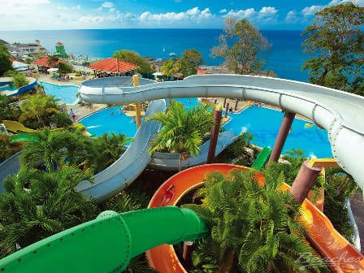

If you want a five-star all-inclusive family holiday in the Caribbean, the three 'Beaches' Resorts are a good place to start.
**If you just want the headline without reading all the waffle, we think Beaches Ochos Rios is the best value Beaches resort for a week's holiday. If money is no object or if you're staying for two weeks then I would pick the biggest resort which is Beaches Turks and Caicos Resort **
Before we pick out our best Beaches resort, it's worth looking at the things that you'll get regardless of which resort you choose. All three resorts include:

Beaches Ochos Rios has several swimming pools (photo from Beaches)The good news is that all three Beaches Resorts get outstanding customer reviews. In fact, there's very little to separate them based on reviews.